|
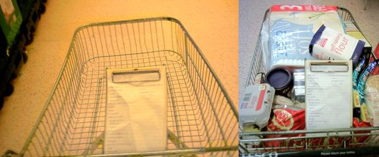 30th September. It's my Mum's birthday. Happy birthday Mum. This is a shopping update. I went to Tesco and i had a long list so I got a trolley. I felt like a bit of an idiot walking around with trolley, especially with a clipboard for my list, but I soon got into it. Skidded down a few of the isles. I am cool. And then there I am at the end with the full trolley. People look at you strangly when you take pictures of stupid stuff like a trolley. Guess how much the shopping came to? Answers in the book. Went to Revolution skatepark in Broadstairs last night. Box was a bit weird but I was doing a few tricks. Played on the halfpipes a bit too. The music was good as well. At Sittingbourne it's almost always the darkness, and Skaterham is either really loud metal or really loud hip-hop, whereas Revolution wasn't too loud and it was much more varied music so I was enjoying it even if it was the Scissor Sisters and other weird pop stuff. It looks wet outside... 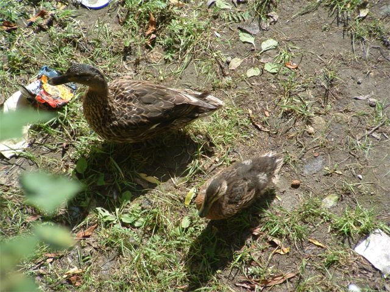 29th September Almost no update today. I have been busy at work and then I am busy tonight, but it's lunchtime so I can fit in a bit of pointless writing. Yesterday I fixed the pool bike at work. That was a good way to spend an afternoon. It had been left unattended for 2 years so the tyres needed pumping up. I couldn't be bothered to pump them much so I took it to the garage. Tonight is a trip to Revolution skatepark in Broadstairs with Nigel. The foam pit at Sittingbourne is probably going next week so I want to get over there this weekend too. Nothing else to report apart from good sales on at HMV and MVC. Oh, and don't ask about the ducks. 28th September 20% of car trips in britain are shopping trips. Instead you could: Consider making or growing more food yourself. I promise I am not making this up, it actually suggests this a real method for "cutting car use". I haven't read past that point as all the laughter coming from my desk made me look very suspicious, even though I was actually doing work. It also suggests travelling by skateboard or scooter instead of your car, promoting the illegal use of these vehicles on either the pavement of the road. Success Story What? So you are suggesting people commit insurance fraud to enable them to travel greenly. Some more quotes, i am not making this up:
Despite high profile disasters, rail travel is statistically very safe. Adrian says he is heathier fitter and happier. Aother thing. What is it with using comic sans for every single piece of text? I was going to make all this text comic sans but it looked to disgusting and I couldn't read it. Its seems to be everywhere. I have to read reports of (supposedly) important documents, like from the guy in charge of the whole council, and it's in Comic Sans. What is wrong with people. I hate Comic Sans. It looks hideous. And using it for important documents is just a joke. It makes it look like kids writing. Can someone get a grip please. I have to read the COMMUNITY SCHOOL DEVELOPMENT STRATEGY 2004 – 2007, but I physically cannot do it because the sight of a page of Comic Sans just makes me feel sick. I don't know what they were thinking. 27th September Thisisnotaskateboard.com is going to die quite soon, so you are going to have to remember to type Scruffian.com instead. Lots of people said it was a bad idea to change the name because I had a link in bmx rider, but I thought that meant it was a good idea and that's dead now too which is sad. Pretty Shady killed it. This update needs a picture so it will have to be something random like this: 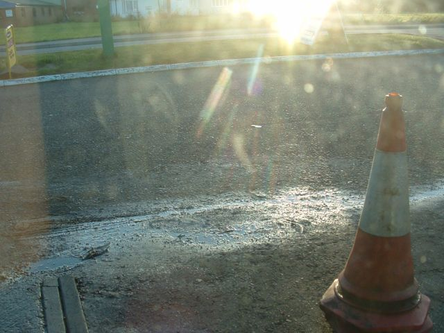 There are trails near here according to pikeys, but we never found them. Search Keywords are words that people type into a search engine and then find your site that way. Here are some that found my site: 1. Scruffy ruffian 2. Wisley dirt jumps 3. Here are some kiddy pics <----- hahaha 4. FBM albert st. music <---- why? 5. Rover 218sd pictures <---- that worked then! 6. Unigate site Tenterden <---- maybe someones going to buy it? That's all the news for today. It's raining so no riding at lunch time. I have a copy of some Marvel comic that might be worth money, which I was given many moons ago so I'm taking that to the comic shop at lunch time. There is a media page here. Go and climb a mountain. 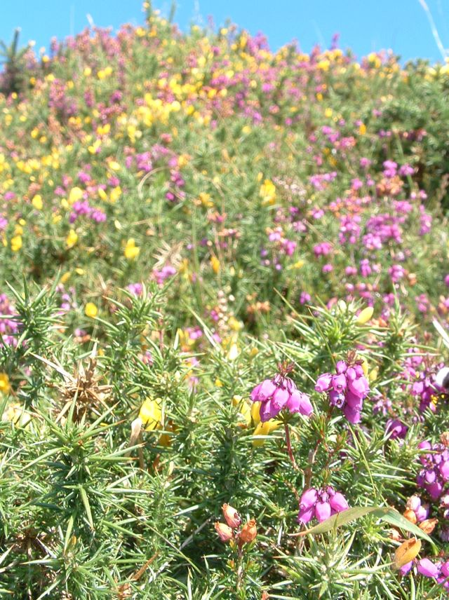 25th September Another hoilday snap. For some reason people think it's good when most of the photo is out of focus. This is a good time to be starting trails. The ground is still dry so you can get all the lines cleared ready for when the rains come, so find a spot and get those rakes and saws and axes out. It looks like Wisley might be saved but no riding there for a while until it's sorted.
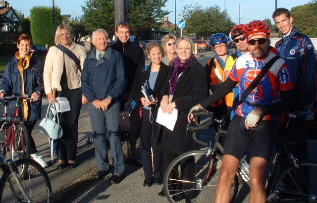 European Mobility Weel 23 September 22 September Riding the park at lunchtime is fun too, and yesterday I was doing
loads of design stuff for my job so I actually had an enjoyable day at
work for the first time ever. The frisbee picture with the frisbee in it. 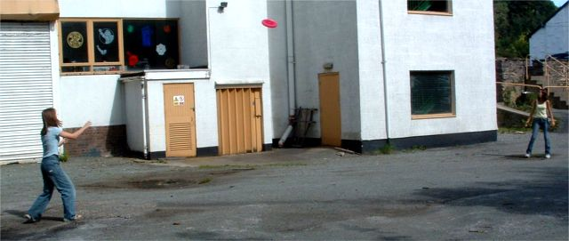 Blackberry Picking I saw some red berries too which I think are hawthorne berries, which might be good for your heart if you believe the internet, but I don't know how they taste. 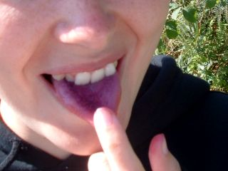 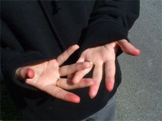 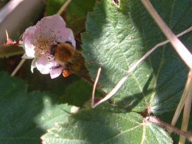 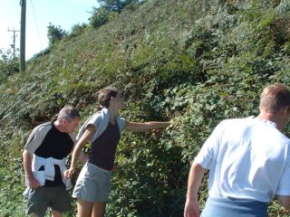 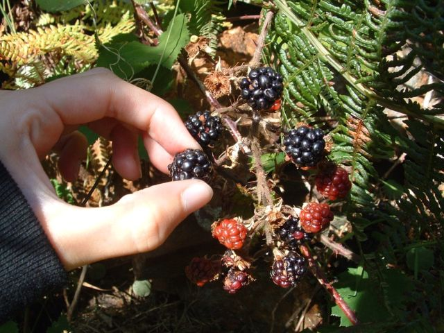 Blackberries These fruits are offered up by Mother Nature to all those who care to pick them in the hedgerows. What can be more satisfying than a bowl of this inky fruit, especially when it has cost nothing? Just your time spent idly enjoying the sunshine and the sound of birds and bees buzzing. Here are a few pointers to remember when you go foraging. Remember that the first blackberries at the tip of the stem are good for eating raw. They have bulbous druplets and their taste is sweet. They ripen from the end of August. By mid to late September, the secondary berries ripen. These are the ones mid way up the stem. These are less juicy but are good for cooking in pies and jams and are rather more tart. Lastly, towards the end of the season, the only fruit left on the bramble bushes are small and woody and not much use at all. They can be mixed with apples in a crumble or pie. It is prudent to mention that when picking blackberries for cooking, pick some unripe red ones. These help strenghthen the flavour and help the fruit to set when making jam or jelly. If you are of a superstitious nature, remember that it is considered unlucky to pick blackberries after 29th September as the Devil is supposedly in them. However, the GWG will leave that one to your discretion. The tips of the leaves can be used for making tea and it is said to cure indigestion and purify the blood. In the nineteenth century, blackberry leaves were added to old, re-dried tea-leaves, when the price of real tea was prohibitive. During the hungry times of the Industrial Revolution, poor people cooked parsnips and beetroot with blackberries to sweeten the dish. Hawthorne Berries Hawthorne berry is an herb that comes from the hawthorn shrub, which can grow up to 40 feet in height. The berries are usually bright red in coloration. They have been used medicinally since the time of the ancient Greeks for such things as insomnia and nervousness. How can it benefit you? Hawthorne berry today is most associated with its widespread use as a tonic for the heart. Specifically, it protects arterial walls, has the ability to dilate (enlarge) coronary blood vessels (the vessels supplying the heart with vital oxygen, blood, and nutrients), and strengthen the heart's pumping ability. Because of these powerful cardiac benefits, it is now one of the most prescribed heart remedies in Europe. Those people who suffer from angina, therefore, would most likely benefit by hawthorne berry's ability to increase blood flow through the arteries. Additionally, for the same reason, those afflicted with hypertension (high blood pressure) may alleviate their condition since narrowed arteries require the heart to work more strenuously in getting blood through them. People who suffer from tachycardia (rapid heart beating) and cardiac arrhythmia (irregular heart beating) may also find relief. It also has antioxidant properities which may help offset arterial damage from plaque formation and accumulation. In short, hawthorne berry is seen by some as an all-purpose heart medicine. 20th September 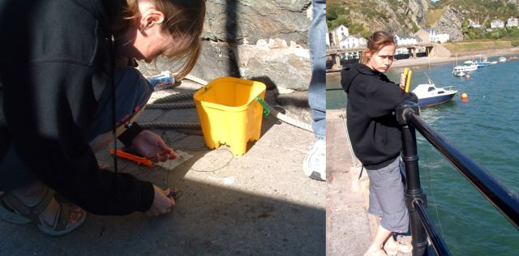 This is mackerel being used as bait, and this is the only crab we caught. Usually you catch a lot more than one crab, but our ones kept letting go when we pulled them out of the water. 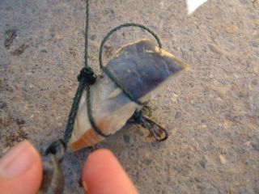 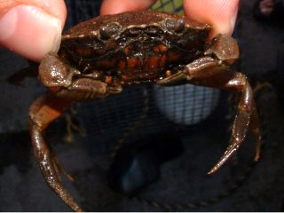 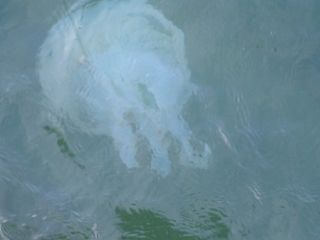 CrabbingOk when you go crabbing, this is what you do. 1. Get some crab line and attach some meat to the hook 2. Put the meat into the sea and leave it there waiting for a crab to nip it 3. Pull the string and the meat and hopefully the crab out of the sea and put it in a bucket. Repeat. That's a jellyfish on the left. we tried to catch it with crab hooks and a bucket but it didn't work. 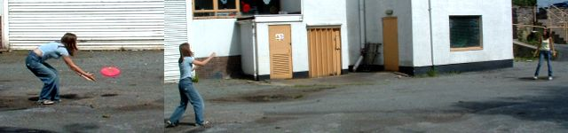 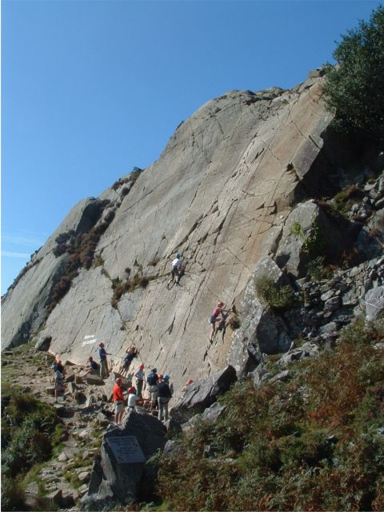 17th SeptemberSome action shots of frisbee by popular demand. I have just realised that I have cut the fisbee out of the right one. i am dumb. The frisbee was pink which is a good colour for a frisbee so you can see it, but it was heavy so it didn't fly that well. And someone threw it in the river and we had to run and get it which was exhilarating. Then on the left people doing some climbing. I thought that looked like
it would be a lot more fun if you didn't use a rope. On Saturday I think I will go to ashford, get some cheap clothes from
ASDA and ride Joeys if it's dry. Anyone else coming? Recent Updates: Lunchtime at my old job. That's Alex smoking and being relaxed in the sunshine. Chilling out with his buddies. That's a mushroom circle on the right. Below that is the orchard where we went to launch the elastic band ball until it got lost. And finally Mark. 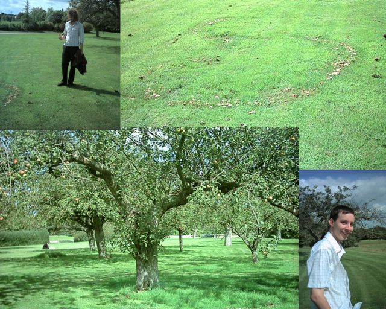 Lunch times at new job are meant to be riding but I am finding it hard to get my bike to work as there is no parking nearby. Plans are being made for a bike shed key. Here's the picture of my html trainer. George Brynison or as I call
him, Big Keith. Lots of people on the course didn't like him because
instead of answering their questions he just answered different
ones. 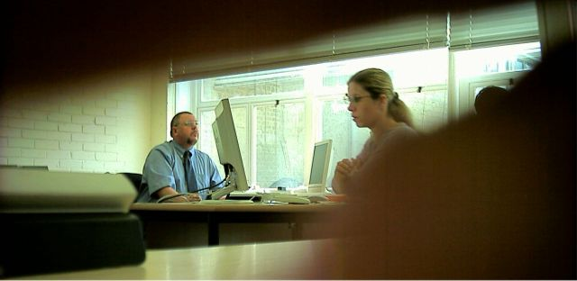 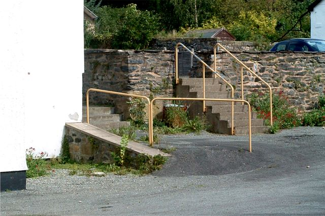 13th September Started a new job today. The jury is still out on that, Kiddy was fun but I guess you are bored of hearing that now. My holiday was good. Did some interesting things like going to this place. It's the doctor who museum. We didn't go inside, just sat and ate lunch by the river and played some frisbee. There are some interesting lines on the rail, bank, ledge, wall thing here. There were a few dirt flyouts and a spine just down the road too but I had a flat tyre. 2nd September 2004 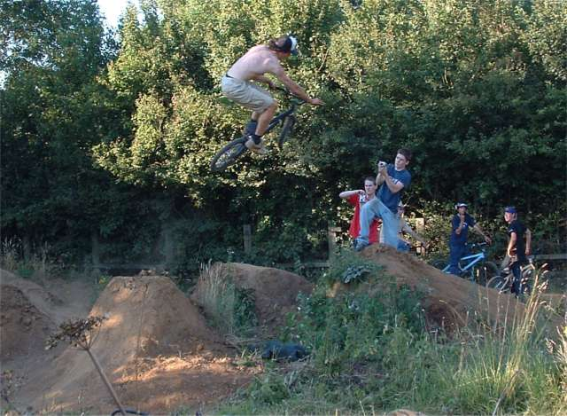 So you're probably thinking that you won't go to Kiddy. I know your type. Your reasons will probably be among the following. I'll answer them for you: 1. I want to go to Kiddy but I don't know anyone and they'll all be
hardcore BMXers who'll beat me up -Not true. Firstly you know me. Even if I don't know you, you read this website so you know me and I want to meet everyone who reads this, so I want to meet you. Also it won't be hardcore BMXers it will be freindly BMXers who will be please to see you. 2. It's a long way to go and I can't get there. Ever heard of trains? You will be bringing your bike, so ride to the nearest train station and then get the train to Oxford and ride the rest. 3. I have a broken ------. Well it's more of a social occasion than riding anyway right? Just come along, chat and take photos/videos. Unless you're Tim. Then stay at home. 4. I won't be able to ride any of the jumps. Not true. You will be able to ride them it's just that you might fall off. Don't worry about that is happens to everyone. And there is a small line which you can ride anyway. 5. I am going somewhere else. So? Just go to Kiddy instead. 6. But I have to visit my ------. Visit them the day after or the week after.. 7. My bike is brokem. See 3. 8. The jumps are too small and I am too good. Are you better than Lima? Thought not. He'll be there so you should be too. (If you are better than Lima then you are excused) 9. I don't ride. So then come and take some pictures. It will still be nice to meet you. Come and say hello to me. I will have the dark green pantera with a rainbow brake cable. 10. I am an annoying ratty internet kid who no one likes and an annoying and never leave my name on the guestbook when I salt Don't go then. So, see you there. 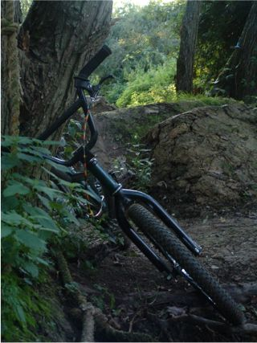 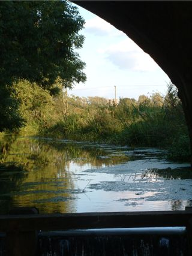 It's Autumn. These are the last photos of Summer. This Summer has not been great. I don't want to moan, but working through long hot days is not fun. It's been very wet as well. The trails were still wet in May which is very late, and there has been a lot of rain in August, so all in all it sucks. Good news on the way? 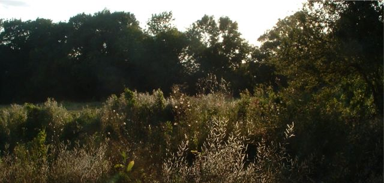 The thing is the passage of time is inevitable. It's a shame that we always look forward to summer expecting it to be good and then end up dissapointed. I guess it's the nature of trails that this happens, but I think it would be better to take each day as it comes. Don't save all your hopes up for summer or for next year because it might never happen. Just try to make to most of the time that you have now. I was thinking about this in the context of what seb said on unknowntrailsrider.tk about wanting to ride but never getting round to it. I guess we all have a tendancy to put things off. Why not go and ride now? Or if not now, then work out when the nextr possbile moment is and do it then. |